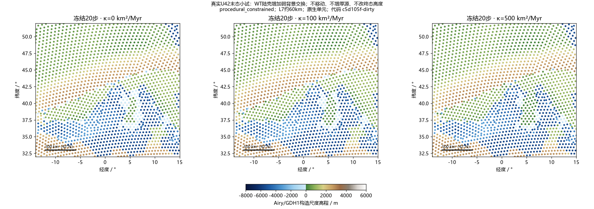
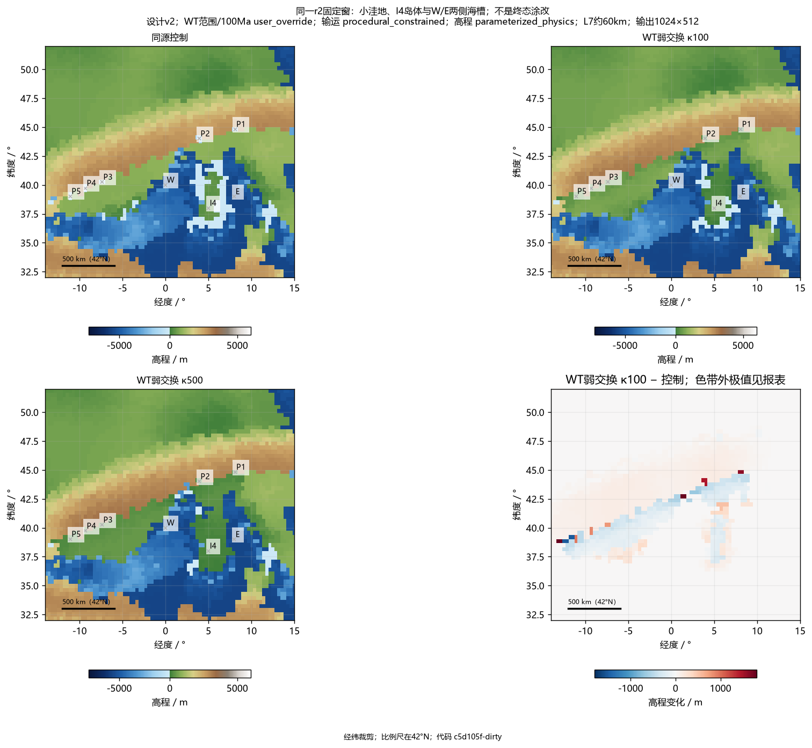
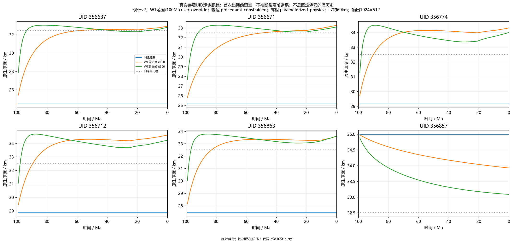
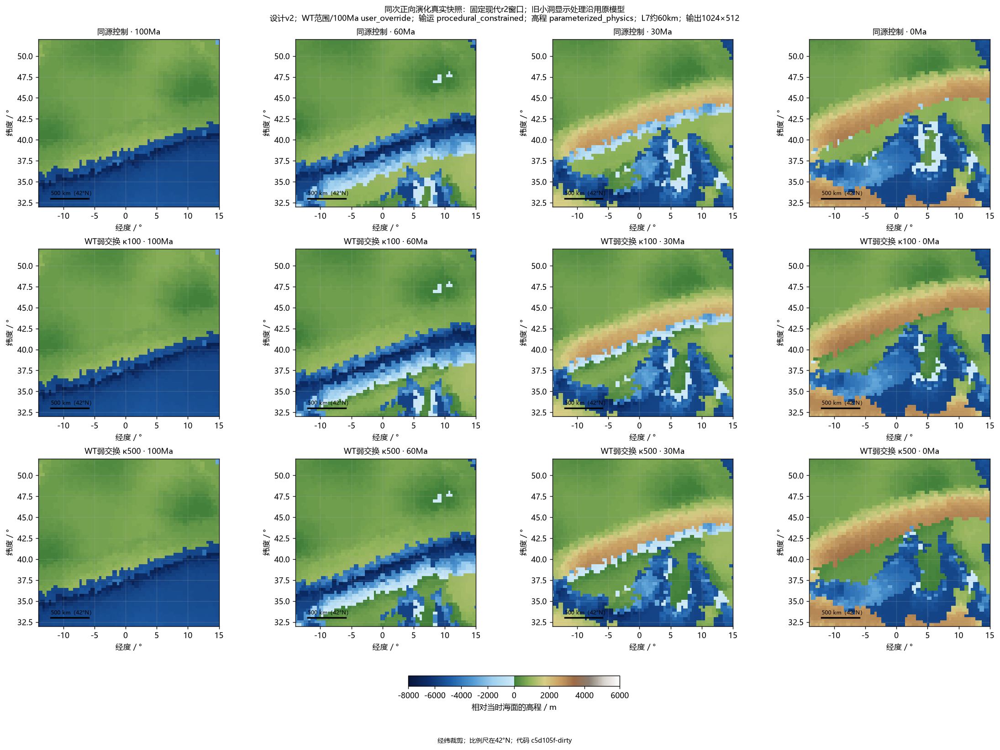
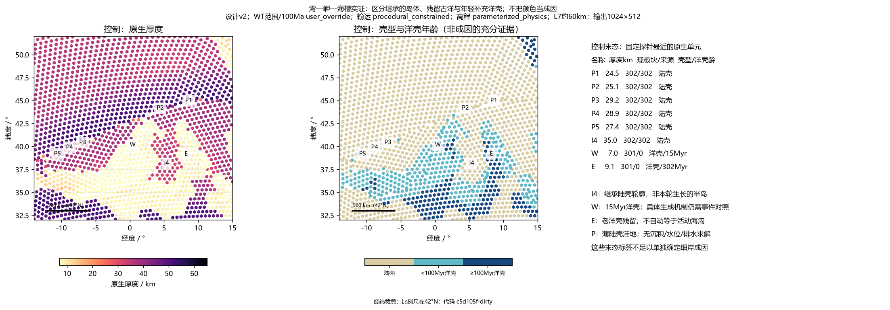
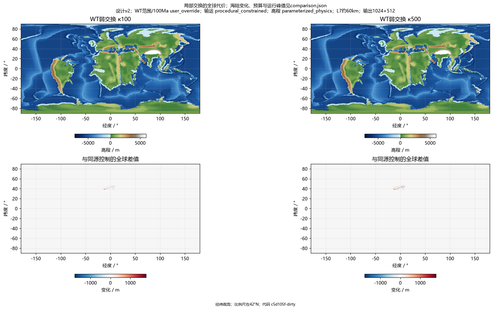
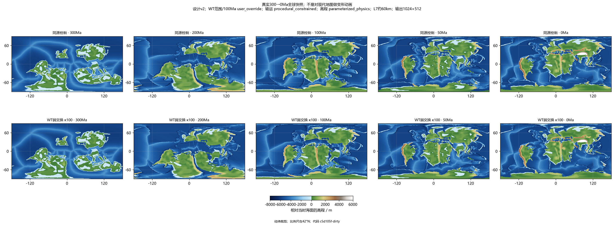
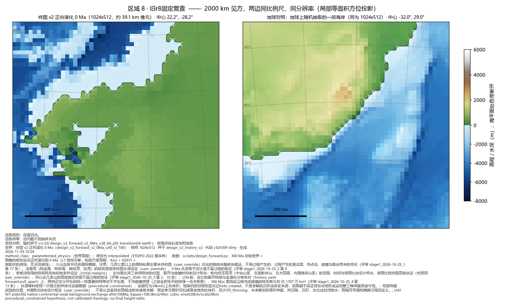
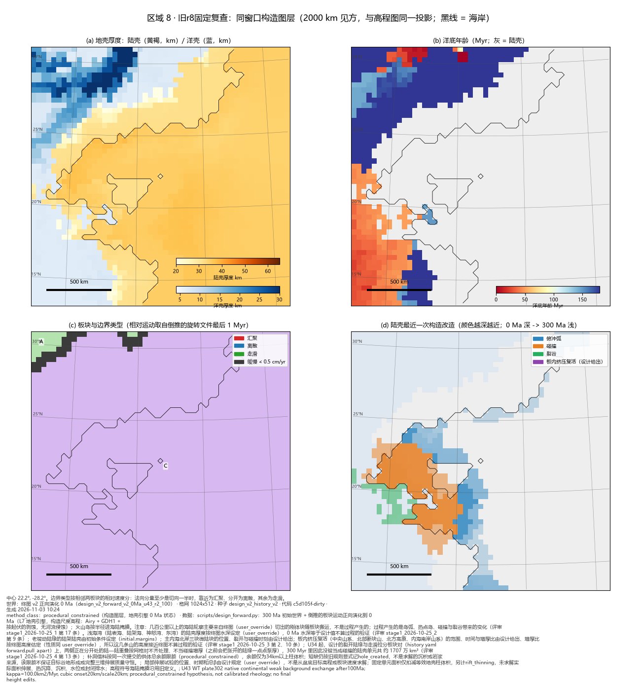

本轮为问题诊断检查点：五处原水下点变成低地，但 I4 岛连到了大陆，主大陆距海指标退为 8/9。两档交换方案均不采用为默认世界。以下展示完整演化、固定岸段和实际代价；阶段 1 未通过。
00_frozen_spike.png

01_fixed_r2.png

02_uid_history.png

03_r2_history.png

04_feature_evidence.png

05_global_cost.png

06_global_history.png

07_previous_r8.png

08_previous_r8_tectonics.png

29张标准图组与地球对照 · 实际数据